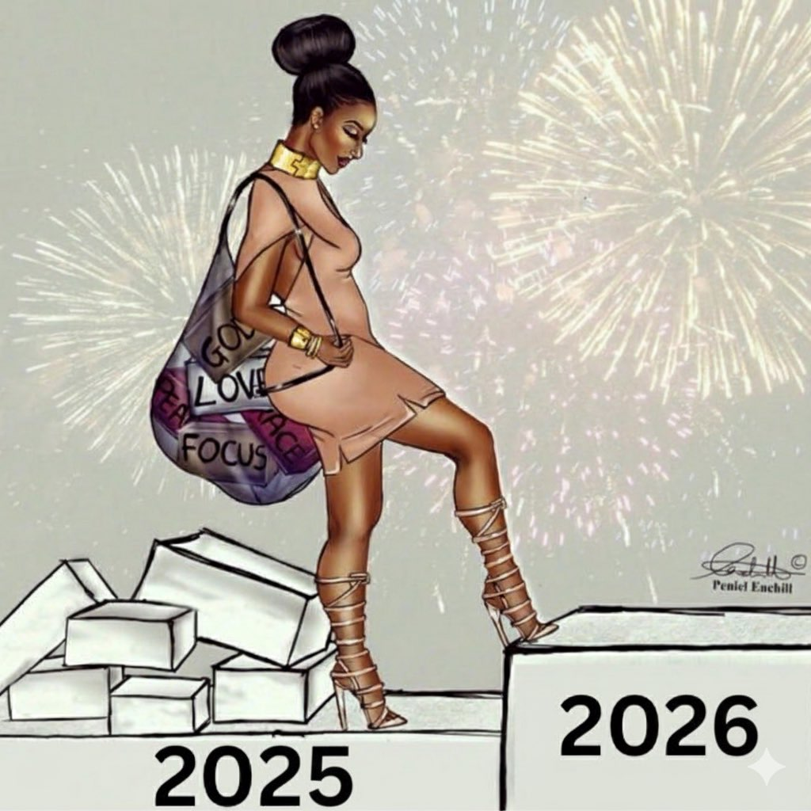

2025 Year-end Wrap-up
2025 is over. Year became a lot better after I went to SGDQ 2025, thanks to meeting some amazing people. Still was pretty rough. And I launched Island Off Outer Darkness on July 24th so that's pretty cool.
The art that affected me bigly from the latter half of 2025:

Island Off Outer Darkness — Fuckin' duh, I made it.

Caroline 2 — This album I really, really, really, really, really enjoyed. So much.

Absolution — It's really really good guys. Old Jim's story really moved me and I felt myself within it. "The sound would be love as long as he was able."

Sorry, Baby (2025) — Most emotionally impactful movie I've seen in. So long. Fuck. Inspired me to write blog092, which actually really helped.
Honourable Mentions:
• Plur1bus — Soooooooooo good. I made an outline for a blog post inspired by it but never ended up finishing it. But the series is sooooo good.
• Divinity Original Sin 2 — I really fucking enjoyed this game, before Larian went and ruined all goodwill. Malady is fucking awesome, it's a shame the new Divinity game is gonna be AI slop.
• Bring It On Franchise — I watched 'em all and they so inspired me. I love garbage!!!
• Watching all those movies in August — Of which the Bring It On franchise was a part of. Fuck dawg. That was a great waste of time.
• Ego Death at a Bachelorette Party — Very good album I've listened to a lot lot lot.
• Save the Green Planet! (2003) — Hhhhhhhhhh. Soooooo goood. I'm saying that about all of these, but. This film so inspired me.
On to whatever 2026 looks like.
